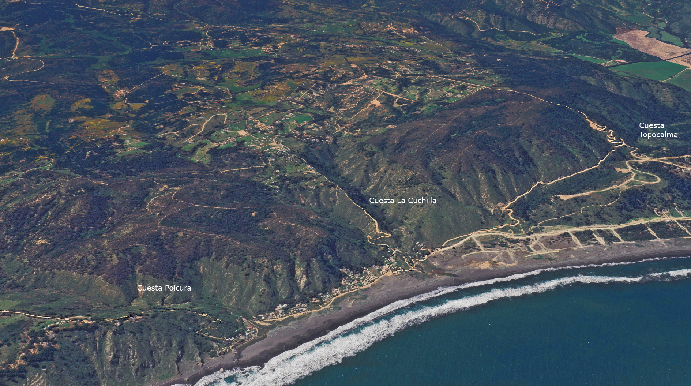

Arquitectura que respira
Refugios en el bosque de Puertecillo.
El Interior
Atmósfera de confort térmico y visual.
Nuestros refugios destacan por su materialidad noble. La Madera Cepillada y los Wall Panels crean un ambiente cálido que contrasta con el exterior moderno, asegurando una experiencia sensorial única en medio del bosque.
El silencio de los árboles a solo 10 minutos de la mejor ola de Chile.
01
Eficiencia Térmica
Diseñadas para mantener el clima ideal usando aislación de alto estándar.
02
Diseño Minimalista
Líneas rectas y puras que eliminan el ruido visual y celebran la geometría.
03
Privacidad Total
Estructuras elevadas inmersas en el bosque para un escape sin interrupciones.
Vivir Puertecillo.

La mejor ola de Chile

Conexión natural

Aventura en los senderos

Miradores privilegiados